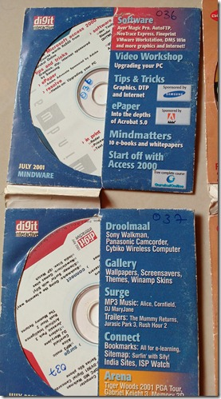
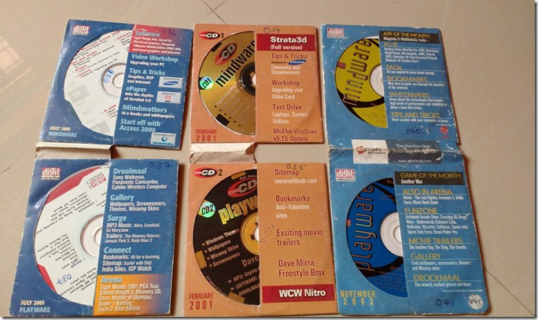
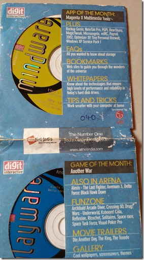

Digit magazine demo CDs



Details
My notes
I used to get demo discs with Digit magazine in India.
Magazine confirmed. Exact disc still being traced.
What it was
Digit was an Indian computer magazine. The magazine’s own retrospective dates its first issue to June 2001 and recalls the importance of its bundled CDs.
Early issues used names such as Mindware for software and Playware for entertainment and games. The photos here are reference copies from another collector, not photographs of my own discs.
Disc clues found so far
- June 2001 — Playware
- The printed contents list Stunt GP Demo among the games.
- December 2001 — Playware
- Printed page 8 lists Rally Trophy in the racing category.
These listings are leads for tracing the collection. Recognising Digit does not mean either of these is the exact issue I owned.
Games connected to this search
- Stunt GP — recognised and confirmed
- Mini Cooper rally demo — possible Rally Trophy match
- Cartoonish egg-shaped car game — still unidentified
- Long, single-seat Lotus — still unidentified